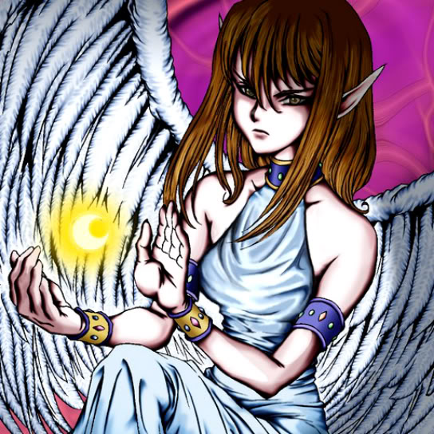

Maiden of the Moonlight

STATS
ATK: 1500
DEF: 1300DECK COST
Deck Cost per Card: 28Fusion List (3 Possible Fusions)
- Maiden of the Moonlight + Celtic Guardian = Dark Elf
- Maiden of the Moonlight + Dark Plant = Queen of Autumn Leaves
- Maiden of the Moonlight + Muka Muka = Mystical Sand